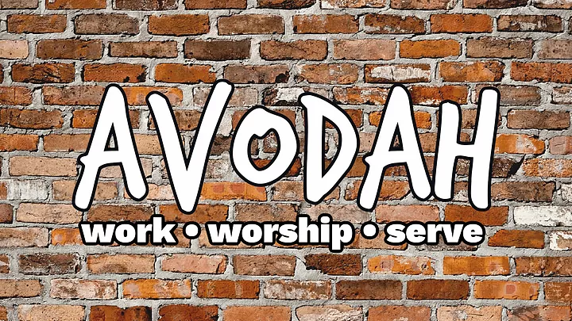

This is Avodah Centre. 이곳은 아보다 센터입니다.
The Distance Learning Center for Addiction Studies (DLCAS) is an internet based educational service that provides comprehensive training and information in the field of addiction studies.
Such knowledge will help individuals stay current with the advances of the field, or will provide the educational training hours needed to either obtain or maintain a credential as a drug/alcohol counseling professional. Addiction Education by way of distance learning is an exciting format that can help save you considerable amounts of both time and money by allowing you to do your training in the comfort and convenience of your own home or office.
| Body | 98% |
| Head | 95% |
| Mind | 99% |